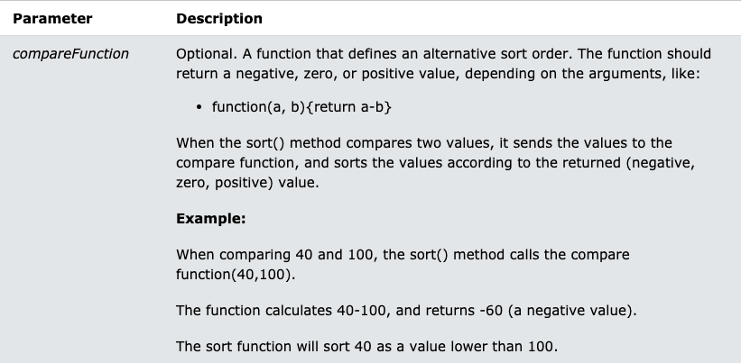

Array Methods - Whats It All About
We will be looking the following meathods that work with Arrays, a very useful skill as a Javascript developer.
The guide we will be using can be found HERE, also giving you access to sample data.
All the workings will be done in the app.js file but I will provide an explination to each method below
Creates a new array
The map method is used to loop through an array while manipulating data in that array, resulting in creating a new array. The manipulation is done to each element in the array through the call back function passed into the map function.
You can pass three paramters into the map method, below is each paramter with a short explination
- *Required* - Value - This is each value in the array that you are filtering on
- *Optional* - Index - The array index of the current element
- *Optional* - arr - The array object the current element belongs to
Creates a new array
The filter method is great, if you would like to find something in an array based on a condition. Simply add .filter to the end of the array and you can use a simple call back function to stipulate the condition you want to use when filtering. The filter method returns back all values that meet the condition specified in a new array. You can also chain on another method on the end of the .filter
You can pass three paramters into the filter method, below is each paramter with a short explination
- *Required* - Value - This is each value in the array that you are filtering on
- *Optional* - Index - The array index of the current element
- *Optional* - arr - The array object the current element belongs to
Creates a new array
The reduce method is great, if you would like to find the total of something in an array. Simply add .reduce to the end of the array and you will pass in the accumulator and the current value as paramters. The accumulator could start by being 0 or a empty array or object and you can set this value right after the call back function. Eventually populating the new returned accumulator.
You can pass four paramters into the filter method, below is each paramter with a short explination
- *Optional* - Accumulator - The accumulator is the value that we end with. We start with a value and build on it to get a final value
- *Required* - Value - This is each value in the array that you are filtering on
- *Optional* - Index - The array index of the current element
- *Optional* - arr - The array object the current element belongs to
The some method is great, method checks if at least one item of the array pass a condition you set in the call back function. The some method executes the function once for each element in the array. Simply add .some to the end of the array and you will pass in a call back function which will be the test each element in the array needs to pass. The some method does not execute the function for empty array elements and does not change the original array.
You can pass three paramters into the some method, below is each paramter with a short explination
- *Required* - Value - This is each value in the array that you are filtering on
- *Optional* - Index - The array index of the current element
- *Optional* - arr - The array object the current element belongs to
Overwrites the existing array
The sort method sorts the elements of an array. The sort order can be either alphabetic or numeric, and either ascending (up) or descending (down). By default, the sort() method sorts the values as strings in alphabetical and ascending order. The sort method overwrites the original array.
You can pass one paramters into the sort method, below is a short explination
- *Optional* - compareFunction - A function that defines an alternative sort order. The function should return a negative, zero, or positive value, depending on the arguments. We pass in two items as paramters and then in the call back function we say which one comes first, known as the compare function
- 
Creates a new array
The every() method returns true if all elements in an array pass a test (provided as a function). The method executes the function once for each element present in the array. If it finds an array element where the function returns a false value, every() returns false (and does not check the remaining values). If no false occur, every() returns true
You can pass one paramters into the sort method, below is a short explination
- *Required* - Value - This is each value in the array that you are filtering on
- *Optional* - Index - The array index of the current element
- *Optional* - arr - The array object the current element belongs to